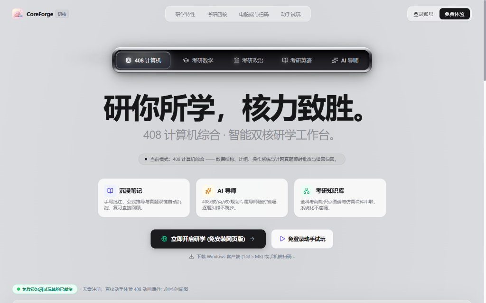

408 计算机学科综合
收录 2009–2024 统考真题整卷，内置 AVL/红黑树旋转动画、Cache 映射、五段流水线冒险、PV 同步原语与 TCP 拥塞窗口交互沙盒。
进入 408 研学专区 →面向 408 计算机综合 与 考研数学 / 英语 / 政治 的一体化全栈智能研学操作系统 & Obsidian 知识大脑。打破刷题与笔记的物理隔阂，让每一道真题沉淀为可回溯的知识网络。
记住专属研学域名：https://claudexxb.online · 支持电脑端、平板与手机 PWA 跨端同步

打开 claudexxb.online 即可在 408 计算机、考研数学、政治、英语与 AI 导师五大模式间无缝切换，手写批注、公式推导与真题双链自动沉淀。
不止于刷题，为每一门考研硬核科目定制专属的可视化推演工具与 AI 判分闭环。
收录 2009–2024 统考真题整卷，内置 AVL/红黑树旋转动画、Cache 映射、五段流水线冒险、PV 同步原语与 TCP 拥塞窗口交互沙盒。
进入 408 研学专区 →覆盖 1987–2024 历年全真卷与李林冲刺卷，出版级 KaTeX 公式渲染，独创 Step Tutor 大题分步踩分点启发引导与泰勒展开实验室。
进入数学推导专区 →支持大小作文 20 分制 AI 四维秒级批改与高分词汇升格卡片，长难句语法树可视化拆解，配合 2000+ 大纲词根词缀艾宾浩斯闪卡。
体验 AI 作文批改 →搭载高精度球面墨卡托矢量中国地图与 1840–2024 史纲时空轴，融合肖秀荣精选题库即时判分、易混纲领对比与遮罩背诵卡。
漫游百年史纲时空 →